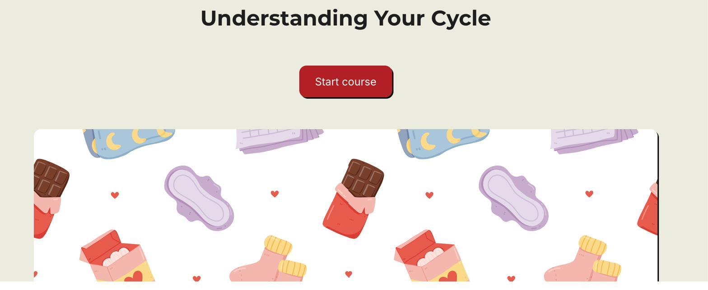

Welcome to the Lab.
This is where I share what I'm actively building — the messy version, not the case-study-ready one. Peek into what's in motion.
Current projects and journal
Understanding Your Cycle
A course about what happens in your body during puberty and the menstrual cycle — and how to recognize when to reach out for extra support. Built to be accessible on its own, so questions can be answered whenever they come up rather than waiting for someone to bring it up first.
Module 1 (Body & Cycle) is drafted. Module 2 (Products) is underway. Built in Parta.

What's on my mind
- Medical accuracy vs. approachability. Making sure the medical parts are accurate while keeping the tone warm.
- Interaction density. Module 1 has a lot going on — flip cards, drag-and-drops, click-to-reveals, knowledge checks. Feels right for the content, but I'm watching for cognitive load.
- Where does a course like this go once it's finished? Public web, partnership with an organization, something else?
Autonomous Vehicle Course
Demystifying Waymo and similar self-driving technology so people feel confident understanding — and eventually riding in — autonomous vehicles.
Featured screenshot, wireframe, or interactive embed will live here as the course develops.
What I'm wrestling with
Placeholder — design tensions and open decisions will go here.
Open questions
- Placeholder — real question being explored
- Placeholder — another real question
Feedback
A course I keep coming back to but haven't started yet. Years of workplace experience plus ongoing conversations with friends and colleagues have me thinking less about the frameworks for giving feedback and more about the psychology underneath — the questions we skip on the way to delivering it.
Currently in the "discovery interview with myself" stage: figuring out what this actually is before I start building.
What's on my mind
- Is the person actually ready to receive it? Most feedback guidance starts with how to deliver. Very little starts with whether the moment is right for the person hearing it.
- Whose benefit is this really for? There's a difference between feedback that helps the receiver grow and feedback that helps the giver feel heard. Not always easy to tell which one you're giving.
- The "feedback is a gift" framing. The metaphor assumes everyone wants gifts, that gifts are inherently good, and that the receiver should be grateful. None of those hold up on inspection — so why do we still use it?
Journal
General thoughts, ideas, and things I'm mulling over — outside of active projects. Updated when something's worth writing down.
Placeholder — real thoughts, questions, and observations that don't belong to any single project will live here. Short, honest, in-progress.